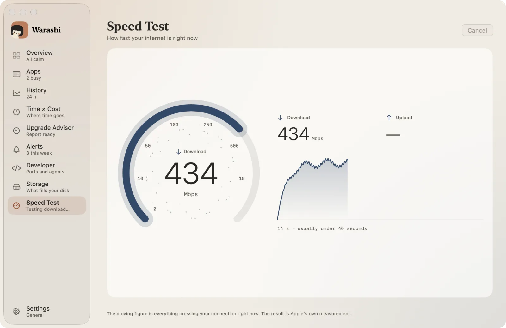
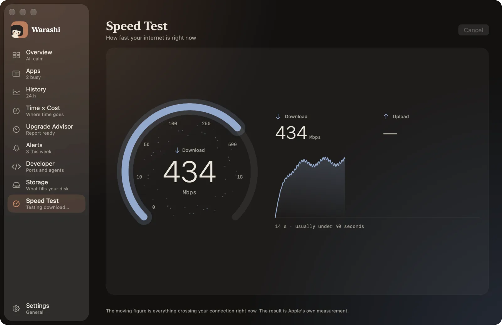
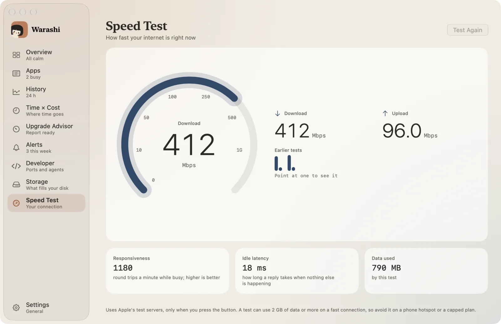
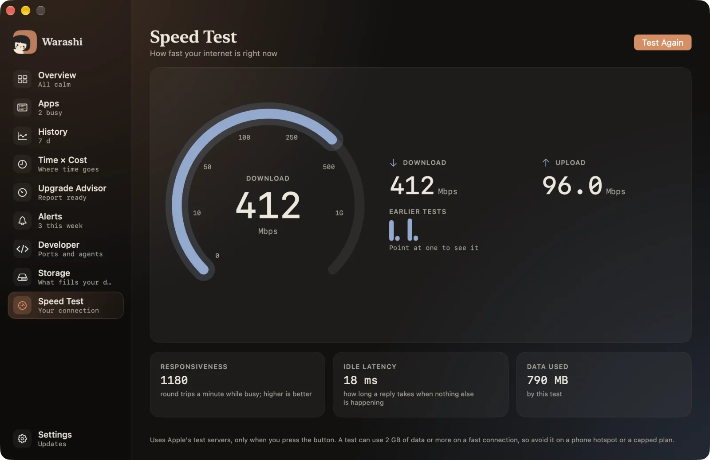

Seu Mac tem um bom teste de velocidade integrado, feito pela Apple. Veja como usá-lo e o que os resultados realmente significam.
1. Execute o teste da Apple
Abra o Terminal (Aplicativos › Utilitários), digite networkQuality e pressione Return. Leva cerca de um minuto e depois mostra sua capacidade de upload e download e a responsividade da sua conexão.
2. O que significam os números
- Download e upload são quanto sua conexão consegue transmitir por segundo, em megabits. O download importa para streaming e páginas da web; o upload importa para chamadas de vídeo e backups.
- A responsividade é quantas idas e vindas sua conexão faz em um minuto enquanto está ocupada. Quanto maior, melhor. Uma conexão rápida com baixa responsividade é o motivo de uma chamada de vídeo travar enquanto outra pessoa baixa um arquivo.
- A latência ociosa é quanto tempo uma resposta leva quando mais nada está acontecendo.
3. Obtenha um resultado confiável
- Pause antes os downloads grandes, os backups na nuvem e o streaming.
- Uma VPN costuma reduzir o resultado, então desative-a para testar a própria conexão.
- No Wi-Fi, teste perto do roteador e depois de onde você costuma ficar: a diferença mostra se o problema é o seu Wi-Fi ou a sua internet.
- Execute duas ou três vezes. Um resultado é só um instante.
4. Cuidado com o consumo de dados
Um teste de velocidade transfere dados de verdade, que podem chegar a 2 GB ou mais em uma conexão rápida. Evite executá-lo em um ponto de acesso do celular ou em um plano com franquia.




O Warashi faz isso por você. O Teste de Velocidade executa o próprio teste da Apple com um clique e mostra sua velocidade ao vivo em um mostrador. Você pode sair da página enquanto ele roda, e ele guarda os últimos resultados para você comparar. Baixe o beta gratuito →